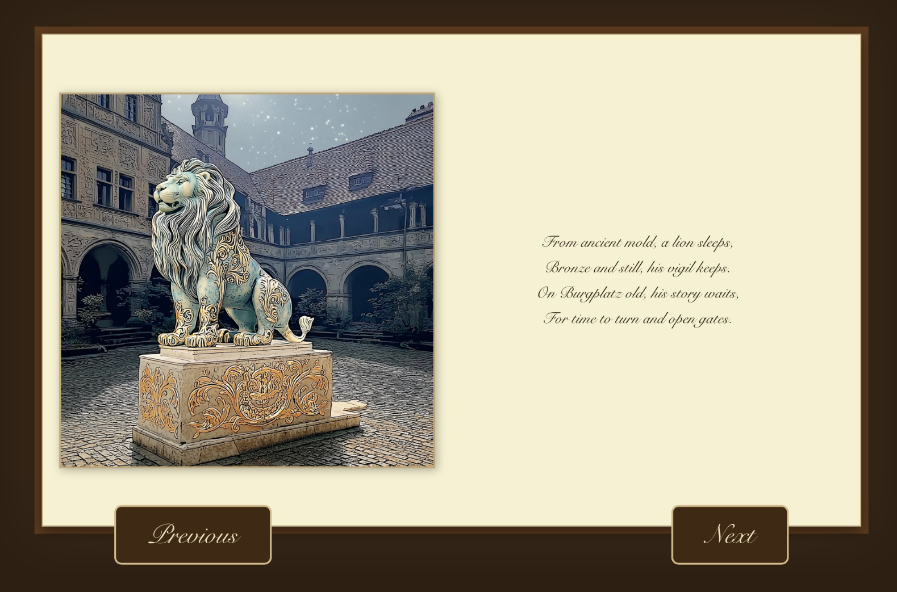

Maddy's Archive
This archive collects all my coding projects from the first semester 2024/2025. The focus in the first semester was mainly on the creation of sketches with p5js and the exploration of creative coding.

Teachable Machine
The "To Cuddle or Not to Cuddle" game was realised with use of "Teachable Machine". The player is given the choice to cuddle different animals and reliant on their decision is given a score based on my own preference, judged by the teachable maschine model I trained.
Nature of Code
This code trys to mimic the growth patterns of an oyster shell. Each shell is a variation of ellipses which are slightly distorted each time. With each iteration a new shell is created.

Text the universal Interface
In this project a chatbot was promted in such a way, that every output must resemble the AO3 fanfiction layout. The output gives the user an answer which is only partly relevant to the input but provides inspiration for a fanfiction based on the input given.
AGI-Debate Club
We debated the positive and negative aspects of AGI in our class. I was on the team responsible for illumination the dangers and pitfalls of this theorethical technology.

A generative Novel
"A Lions Adventure" is the titel of the novel my group created with the help of Midjourney, Gemini and Chat GPT. The poem tells the story of the statue "Der braunschweiger Löwe" come alive. The lion explores modern day brunswick and remeniscence of times past.
Conclusion
Here is my conclusion to the second semester in 2025. Here you find an overview of what I learned, liked and despised.